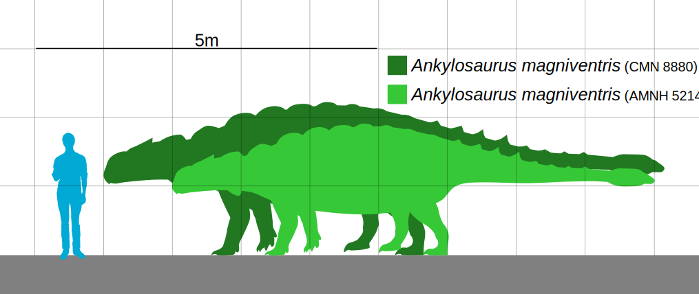

The Ankylosaurus was quadrupedal, with a broad, robust body. It had a wide, low skull, with two horns pointing backward from the back of the head, and two horns below these that pointed backward and down. Unlike other ankylosaurs, its nostrils faced sideways rather than towards the front. The front part of the jaws was covered in a beak, with rows of small, leaf-shaped teeth farther behind it. It was covered in armor plates, or osteoderms, with bony half-rings covering the neck, and had a large club on the end of its tail. Bones in the skull and other parts of the body were fused, increasing their strength, and this feature is the source of the genus name. The Ankylosaurus was the largest known ankylosaurine dinosaur and possibly the largest ankylosaurid. The description of the Ankylosaurus is similar to the Stegosaurus. [1] 
They are mainly found in North America and Canada. Ankylosaurus and other Late Cretaceous ankylosaurs have been found had in places with a warm subtropical/temperate climate, which was monsoonal, had occasional rainfall, tropical storms, and forest fires. The type specimen is from the Hell Creek Formation of Montana, while other specimens have been found in the Lance and Ferris Formations in Wyoming, the Scollard Formation in Alberta, and the Frenchman Formation in Saskatchewan, all of which date to the end of the Cretaceous.
Though 14 specimens have been found none of these were complete skeletions. Many of them were just isloated bones, armor and teeth.
The Ankylosaurus was a herbivore. Austrian Paleontologist concluded that despite the large size of ankylosaurus skulls, the associated musculature is relatively weak. Reconstructions of ankylosaur forelimb musculature made by Coombs in 1978 suggest that the forelimbs bore the majority of the animal's weight, and were adapted for high force delivery on the front feet, possibly for food gathering. It’s nasal passages worked as a water and heating balancing system.
The Ankylosaurus had armor. It’s armor consists of knobs and plates of bone known as osteoderms, or scutes, embeded in the skin. The exact placement of these on the body is unknown. The osteoderms ranged from 1cm in diameter to 35.5cm in length, and they varied in shapes. Like other ankylosaurids, Ankylosaurus had cervical half-rings (armor plates on the neck), but these are known only from fragments, making their exact arrangement uncertain.
Ankylosaurus had a heavily armored body covered in bony plates and scutes. These provided protection against predators. Its tail club, with bony knobs, was a formidable defensive weapon. When threatened, Ankylosaurus could swing its tail club to deter or injure predators. Ankylosaurus was primarily a herbivore, which means it primarily fed on plants.It likely browsed on a variety of vegetation, including ferns, cycads, and early angiosperms (flowering plants). Its small, leaf-shaped teeth were adapted for cropping and chewing plant material